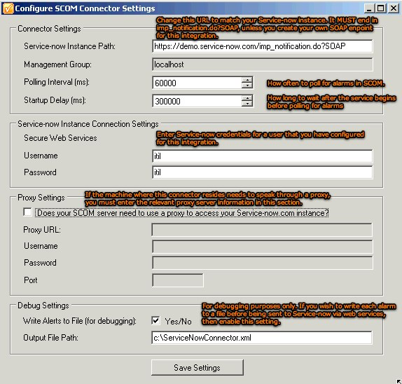
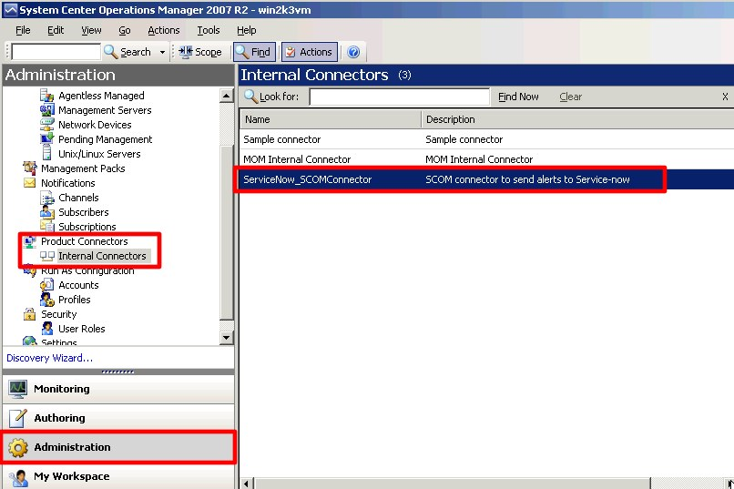

Microsoft System Center Operations Manager SCOM Integration
| |
Note: Starting in Fuji, this integration has limited support. See KB0564889 for more information. |
| |
Note: This article applies to Fuji and earlier releases. For more current information, see Configure Alert Collection from SCOM at http://docs.servicenow.com
The ServiceNow Wiki is no longer being updated. Visit http://docs.servicenow.com for the latest product documentation. |
Contents
1 Overview
The Microsoft SCOM integration is bidirectional and is achieved using Web Services on the inbound and a custom update_alert.exe command outbound to SCOM. This article assumes knowledge of the use of SCOM (e.g. setting up alarm rules).
{kind=link}
- Once you enable the Microsoft System Center Operations Manager (SCOM) plugin, you will have the Integration - MS SCOM application available.
{kind=link}
- Properties - configure properties for ServiceNow to SCOM integration via MID server
- Notification WS - Notification Web Services
- SCOM Updater - script object used to queue ServiceNow to SCOM update commands using the MID server
- Download Installer - Opens a window with a link to download the SCOM connector installation file
- Documentation - Link to this article
There are two parts to the integration.
- SCOM to ServiceNow
- ServiceNow to SCOM
A brief overview follows:
1.1 SCOM to ServiceNow
- Download the SCOM connector by clicking on the Download Installer module.
- Unzip and run the installer on the machine that hosts the SCOM server.
- Follow the instructions in the installer. Toward the end of the installation, a properties window will appear to allow you to customize this connector for your environment.
- 
- Setup SCOM to use the newly installed ServiceNow connector.
- 
- Configure SCOM to use the ServiceNow connector.
- The connector will now check for any new alerts which it is assigned.
- If alerts are triggered, the connector will send a web service to ServiceNow's notification import set to be transformed.
- The import transform map creates a new incident, or correlates on an existing incident to update it.
- It creates a Listener for the incident for when the incident is closed, MS SCOM is notified.
- The resulting incident number is returned to the SCOM connector which, in turn, updates the alert in SCOM's TicketID field.
{kind=link}
{kind=link}
1.2 ServiceNow to SCOM
- Execute the update_alert.exe command line commands when a ServiceNow record is closed.
- Use the correlation_id field to correlate a ServiceNow Incident to a SCOM alert ID
- Execute command by proxy using the MID Server.
2 Integration Pre-requisites
- Microsoft System Center Operations Manager v 6.1+
- Windows Server 2003 / 2008
Since the connector will be doing an HTTPS POST, you will also need port 443 or 80 (HTTP) access from your SCOM server to your ServiceNow instance.
3 SCOM to ServiceNow
3.1 Notification Web Service Import Set
Once the connector has sent the SOAP message, an inbound Notification import set row is created. The Notification web service import set is located under the Integration - MS SCOM application. The integration uses the standard Notification web service import set. On this Edit Web Service form, you can add additional fields to the web service if you wish, or select the related import set map to alter the default mapping conditions.
{kind=link}
3.1.1 Web Service Fields
A list of modifiable (admin rights) web service fields. You can add more fields here or extend the size of these fields if you need to.
3.1.2 Web Service Transform Maps
Transform Maps that map the source Notification into the target Incident table. The map also sets up a listener process for each Incident created by SCOM. When the Incident is updated, the SCOMUpdater script object is triggered to command the configured MID Server to execute a SCOM command to update SCOM.
The SCOM alert's ID is used to correlate the Incident and is used to update the SCOM alert in the opposite direction when the Incident is updated.
4 ServiceNow to SCOM
Integration from ServiceNow to MS SCOM utilizes the update_alert.exe command line command. When an Incident is created from SCOM, the incident will trigger the SCOMUpdater script object whenever it is updated. At this current version of the update_alert.exe, the only communication that will be sent back to SCOM is that of an incident closure.
| |
Note: MID server polling initiates instance-SCOM communication. No additional firewall configuration is necessary for the instance to talk to the SCOM. |
4.1 Properties
The following properties configure the SCOM alert, as well as the MID Server that would execute the command line.
{kind=link}
{kind=link}
Contents > Integrate > Vendor Specific Integrations > Event Integrations
Contents > Integrate > Vendor Specific Integrations > Incident Integrations